Python for analysis
Think you have a great trading idea? Well, one way you can test your idea is by backtesting it. Backtesting is when you use a certain strategy on historical market data and see how well it would have performed. This is a good way of testing to see if your idea could be good, even though previous market history data may not represent future stock prices.
Here I am going to test a trading strategy where when the price is increasing and hits the Simple Moving Average (SMA) of 50 days, which is the average price of the stock from the last 50 days, then the script will buy long. Finally, when the price of the stock is decreasing it will sell once it hits the SMA again. This is used because in theory we will be able to catch any large upswings in price and avoid the crashing in price.
Note, the backtrader python library doesn't really work with the Yahoo Finance API very well (which is what I used in "Python for analysis" on this website). So, we cannot use the yfinance Python library (or at least nearly as easily) so instead I went to the Yahoo finance website and downloaded the market data as a CSV file to use for this, which is basically the manual alternative to using the API. You can do this with the link : https://uk.finance.yahoo.com/quote/GOOG/history?p=GOOG for google stock and clicking download like so:
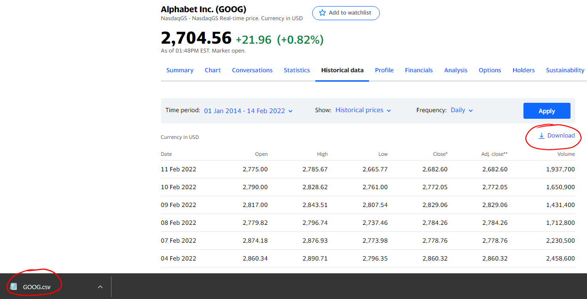Below is the annotated code which uses our strategy on Google stock (Alphabet Inc, symbol: GOOG) which goes back to the 1st Jan 2012.
You can find the code from below here: https://github.com/Nicholas-Bakic/Backtester/blob/main/Backtester.py
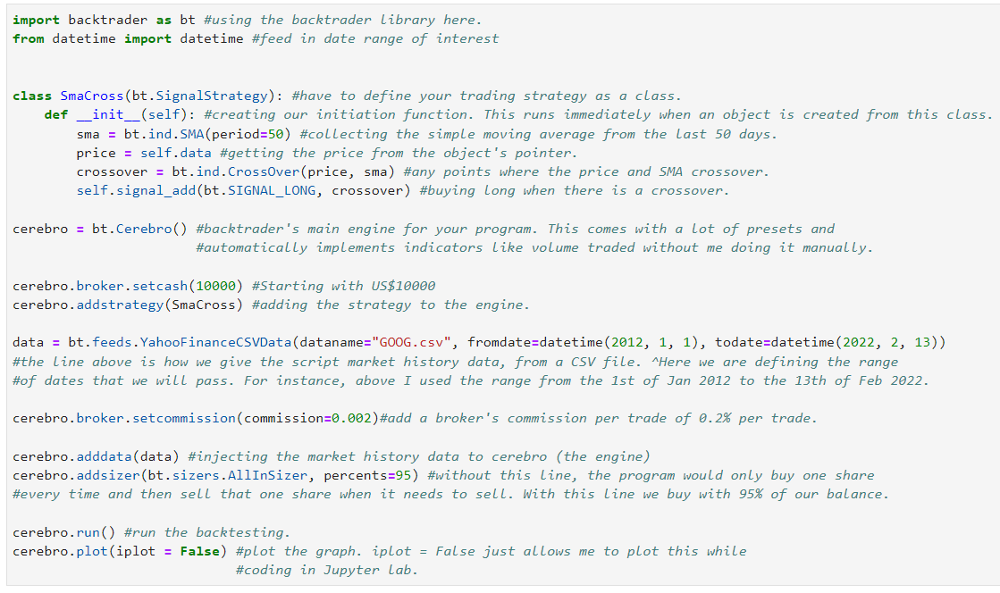Here is the output:
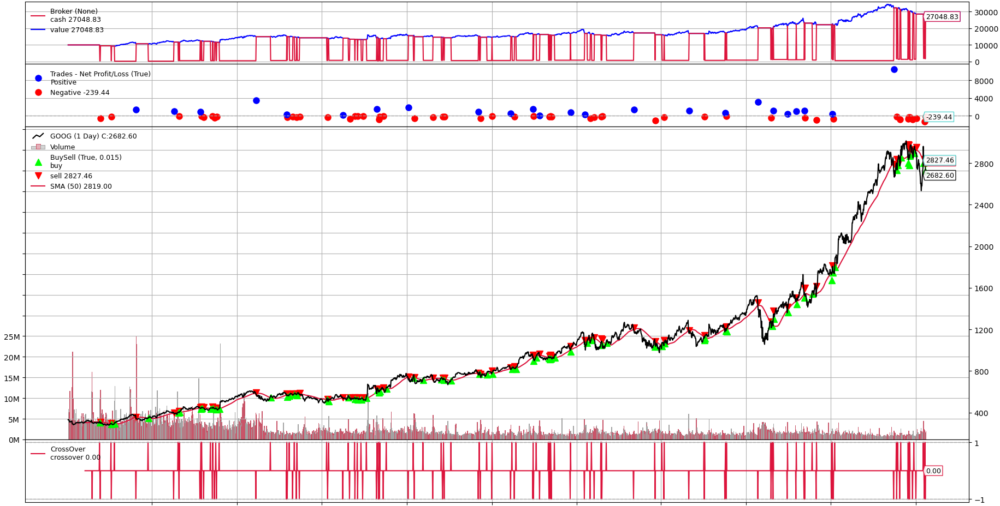So when you first look at it, it seems messy and that there is a lot going on. However, it is quite easy to break up.
On the bottom left, the 0M, 5M, 10M, 15M, 20M, 25M is the volume traded, in millions, which is shown by the smaller bars on the bottom - under and around the stock price.
At the very bottom, the red lines, labelled as crossover, essentially show if a trade is making money, losing money or horizontal means there are no active long positions.
The numbers on the right of the chart represent the price, which increments in 400s - starting with 400 and then 800, 1200, 1600, 2000, 2400, 2800.
Above the stock price are some dots. These are annotated on the left describing how a blue dot indicates that the last trade was profitable and a red dot was a trade that lost money. The height of the dot represents how much money was gained/lost; this amount of profit or loss is shown on the right with values of -2000, -1000, 0, 1000 made on a single trade.
At the very top is our balance, keep in mind we started with $10,000.
Towards the later stages of the chart, just before the massive, continuous rise in price, there is a dip, let's zoom in.
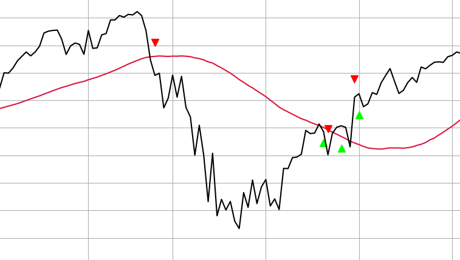Due to the nature of this trading strategy, we were able to sell our share (red downward arrow head) before the price decreased by $370 since it crossed the rolling average on a decline. Then, we were able to buy back again (green upward arrow heads) when it had risen in price; although we could've bought at a cheaper price at the bottom of the dip, at least we avoided it.
However, had we just bought GOOG stock at the very beginning (when it was worth just under $50) and just held it until today (priced at $2,682) we would have been able to buy 200 shares with our starting $10k, which could've made our account worth $536,400 today. So, even though we made $17,000 with this trading strategy, we could have made $526,400 by just simply holding it.
Overall, this is a clearly very simple trading strategy which only works in bull markets since we cannot short sell and we are relying on the price increasing in order for it to cross the SMA and buy. As a result, it cannot take advantage of any dips in price, it just avoids them. Futhermore, the timing is never great; we only made money because GOOG stock increased significantly during the later quarter of the chart. Only because we had chosen a very good performing stock to test this strategy with is why we made any money at all.
Using the strategy in bear markets
In bear markets, this trading strategy is quite bad. Take Kraft Heinz Company (KHC stock) for instance, which has been on the decline for a few years.
Below, you can see that not only did we lose money ($4,263.70), but you can tell from the lowest down red dot, near the top of the chart, that our worst trade lost us close to $2,000 on 22nd Feb 2019. This happened because Kraft Heinz reported losses in earnings and the SEC had served them with a subpoena to investigate their accounting.
We lost so much money here because the difference in price between the day before's closing price and the next day's opening price was about $13, or a 27% fall.
There were a lot of after hours trading orders which were executed as soon as markets opened; the price immediately plummeted when they opened back up. Since it was so quick, our trading program couldn't sell fast enough, as it buys/sells on closing prices only.
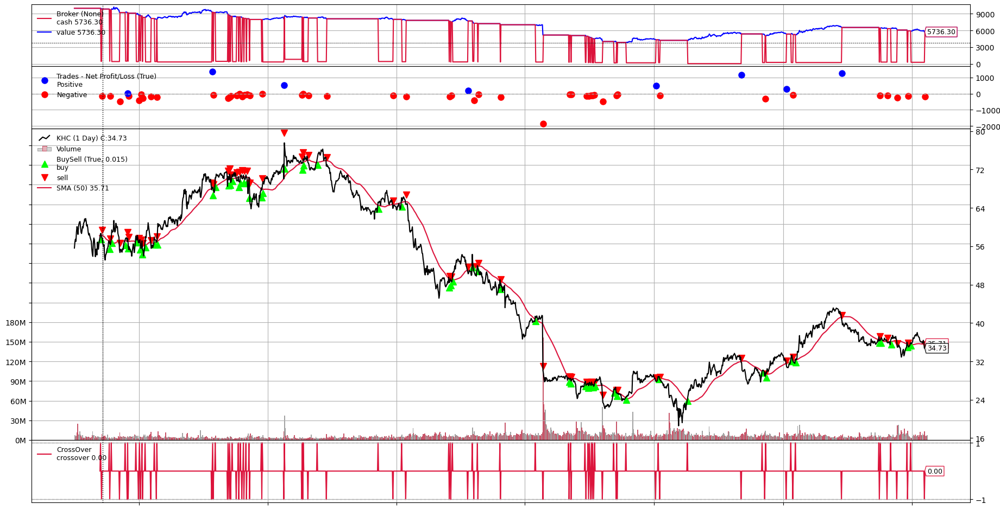Alternatively, we can manually code the backtesting ourselves:
If you think that using the backtrader library is either a bit confusing or that you don;t have much customisation over it, you can code the backtesting manually
Let's make a simple trading strategy. For instance, if the price of a certain asset falls for 3 days in a row, you buy it and hold for 5 days (a trading week).
We can do this by iterating through all of the prices and comparing prices next to each other in the list and decide whether to buy
Note: To find the repository of the code from below, click here.
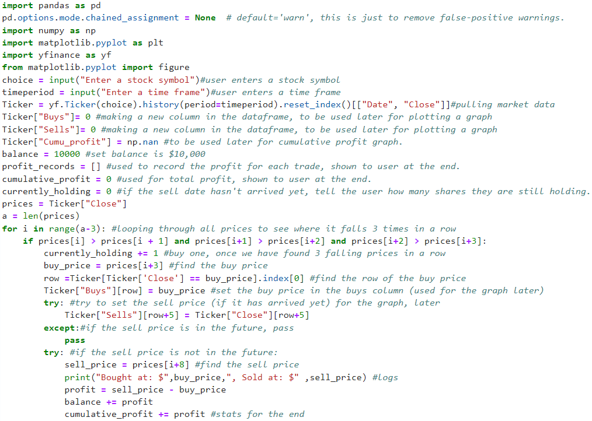 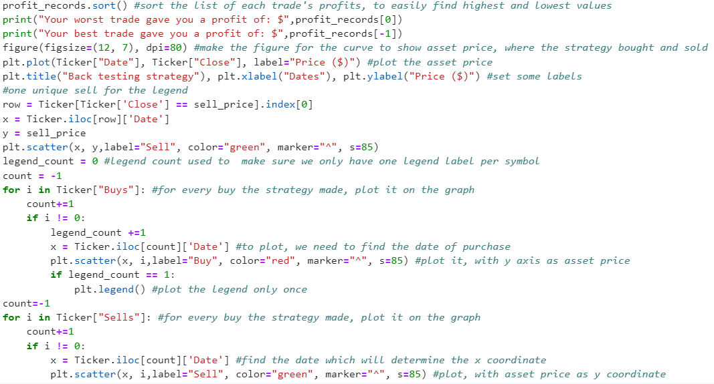The code above shows how we can load stock prices (which the user can specify) and then it firstly compares 4 prices that are next to each other to determine whether there has been a fall in price for 3 days. Then the buy price is deducted from your starting balance (here, $10,000) and then if the sell price which is in 5 days times has already passed, the difference between the buy and sell prices is added on to the balance. If the sell date has not come yet, e.g. if it is in the future, then at the end of the runtime, the program will print if you are currently holding any stock that is waiting to be sold.
I then record all of the buys and sells that the strategy makes by creating a new column in the dataframe to plot at the bottom of the program.
Programming a legend for asset price, buy and sell icons was particularly difficult. I couldn't plot it like how I have in the rest of the website because
everytime I make a new buy or sell icon, it makes another icon row in the legend box which winds up just taking up the whole figure, like so:

I had to do something similar to the buy points as well to make sure that the legend would not be filled with 20 red icons. First, I make a legend_count which just is a count to find the very first buy point that the strategy makes. Then, when legend_point is equal to 1, which means we made out first buy, we display the legend now and never call it again, since there would just be 20 red icons flooding the figure from the legend.
The "try" and "except" pieces in the code are there since if the sell date has not come yet, without these in place, the program would display an error since the sell date is not in the list of close prices. So, I implement the "try" and "except" parts to stop the error form showing and just recording the fact that we now have to hold shares that we buy from now on, while still including the balance deduction.
In the code below, I chose Bitcoin to USD and to test the strategy on the last 2 years (2y) as you can see at the top, in the image below. At the end, your total (or cumulative) profit, best and worst trades are shown. So is your balance and any stock that you are still holding and waiting for the sale date to come.
For this demonstration, I have also included all of the logs for buy prices, sell prices, profit, balance updates and which points I hold a stock since the sell date has not arrived yet.
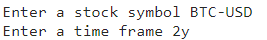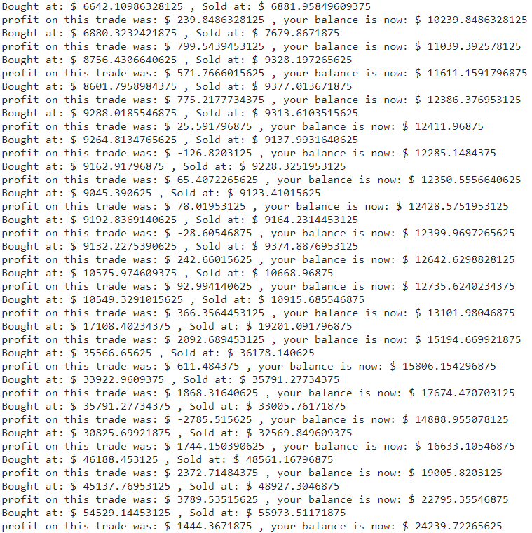
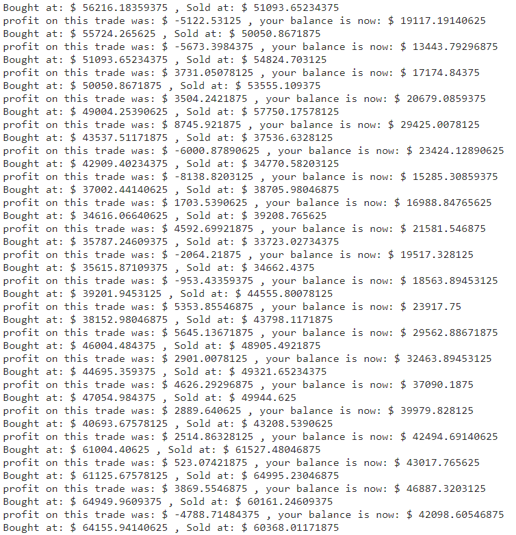
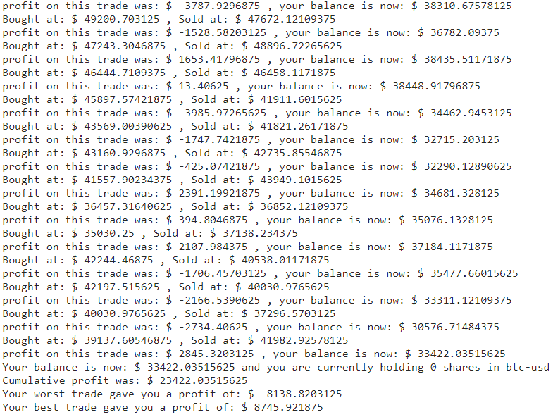
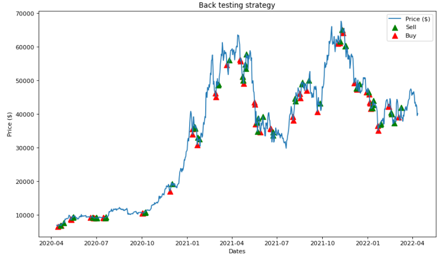